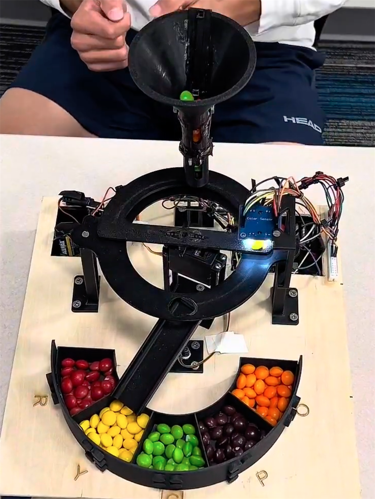
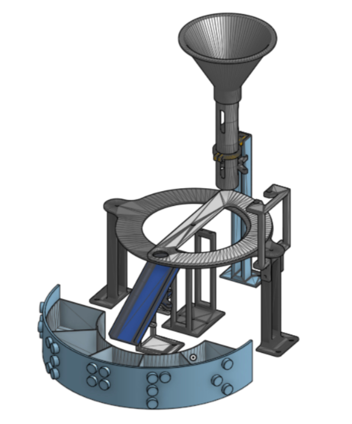
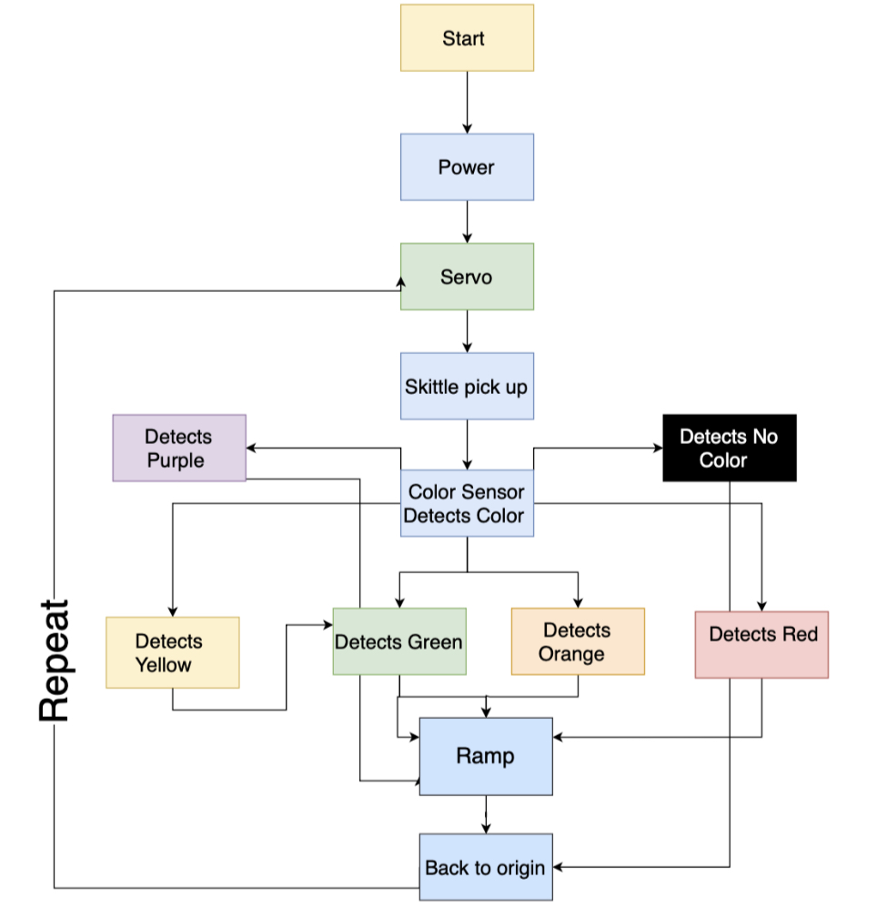
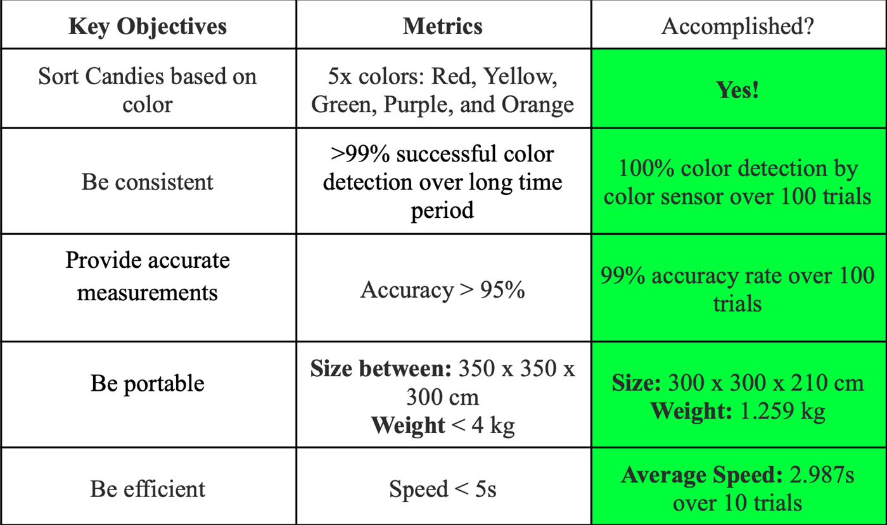

Spring 2025 · Accessible Design
Skittles Color-Sorting Device

The Device
A sorter built for everyone
This project was a portable, fully 3D printed candy color sorting device that sorts Skittles by color into five labeled compartments. The device was built with accessibility in mind: each compartment is marked with both a large engraved letter and a Braille label, making it usable for people who are color blind or visually impaired. The entire housing is powered by batteries with no external power source needed and is lightweight (1.2kg), making it very portable.


CAD & 3D Printing
Built from the ground up
Every component of the device was designed from scratch in SolidWorks and 3D printed in PLA material. The 18 custom parts include the funnel, rotating disc, ramp, compartment storage, sensor mounts, servo supports, and housing for the Arduino and batteries. Each part was dimensioned precisely to fit Skittles and integrate cleanly with the motors and wires.
Code & Detection Algorithm
The logic behind every sort
The Arduino code reads raw RGB values from the TCS3200 color sensor and converts them into normalized ratios, which are then compared against calibrated reference values for each of the five Skittle colors using a nearest-neighbor algorithm. To eliminate false readings, the system requires two consecutive matching detections before confirming a color and moving the ramp servo to the correct position.

Results
Every objective met
We set five key objectives at the start of the project and hit every single one. The device achieved 99% sorting accuracy and 100% color detection across 100 trials, sorted each candy in under three seconds on average, and came in at just 1.26 kilograms.
Demo